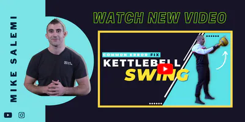

B675 · Are your shoulders in the right position?
Hi {first_name},
The 2-Hand Kettlebell Swing is a staple in my training and carries many benefits.
On the other hand, repeating a technique error over time for thousands of reps will lead to some trouble.
Fortunately, locking in solid technique CAN be a simple fix. Even better, your practice reps to drill the fix add to the benefits you’ll get from the movement.
Watch this video to get coaching on how to keep your shoulders and upper back in position on both the 2-Hand Swing and the Double Kettlebell Swing.

Countdown To A New Program Kettlebell Lifestyle LIVE is starting next week! The program is going to be a ton of fun. Each week you'll get to learn new technique tips (as if you were having a mini-workshop each week), go through a new workout, and then decompress your body with targeted stretching.
Sign up for the free kettlebell workshop + workout happening February 1st. The best way to know if you'll love Kettlebell Lifestyle LIVE is to sign up for the workshop + workout and experience a sample of what coaching with me live is like. If you can't attend live, you'll still have 72 hours access to a recording, so register today.
Keep training intentionally, Mike Salemi
P.S. Did you know I'm offering a FREE Kettlebell Progressions workshop happening on February 1st? Click here to sign up.
*If you cannot attend the live workshop at 5:00pmPST, all participants do get a viewing link available for 72 hours) |